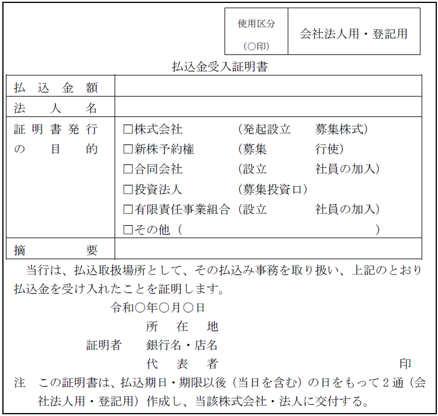
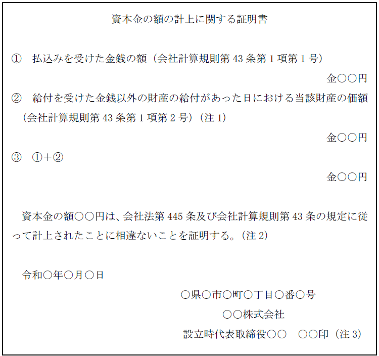
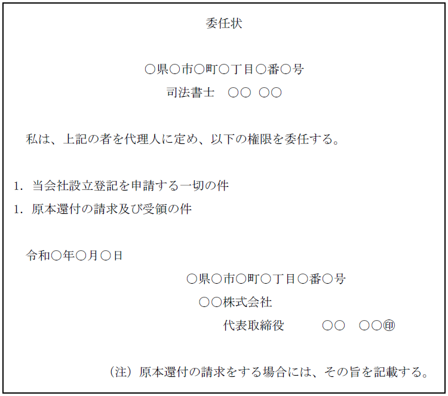
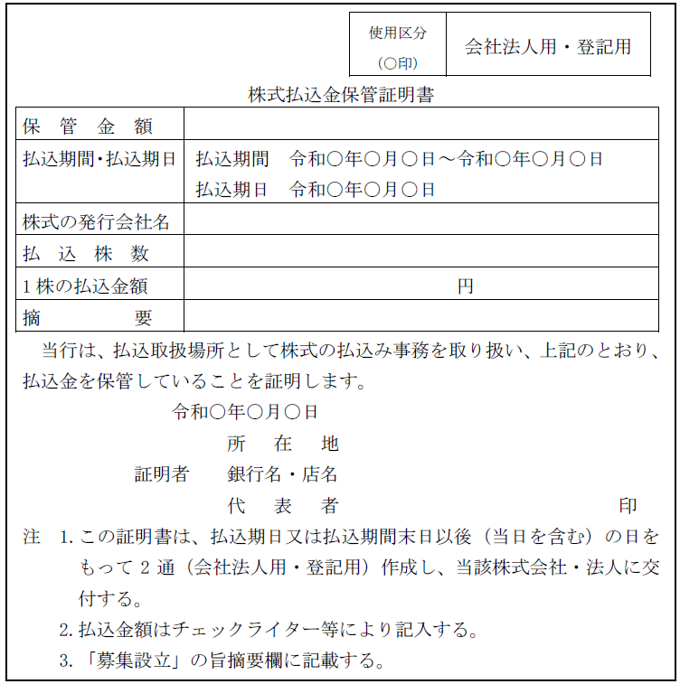

第２編 株式会社
第１章 設立
第２節 設立関与者の責任
1. 任務懈怠(けたい)責任
| 責任を負う者 | 要件 | 誰に対する責任か？ |
| 発起人、設立時取締役又は設立時監査役 | 設立についてその任務を怠ったとき | 株式会社に対し損害賠償責任を負う（会社法53条1項） |
| 任務を怠ったことにつき悪意又は重過失であるとき | 第三者（設立時募集株式の引受人・株主を含む）に対し損害賠償責任を負う（会社法53条2項）。 |
※設立時会計参与及び設立時会計監査人の損害賠償責任については、規定されていない。
(1) 対会社責任
発起人、設立時取締役又は設立時監査役は、設立についてその任務を怠ったときには、株式会社に対し損害賠償責任を負う（会社法53条1項）。
なお、他の発起人、設立時取締役又は設立時監査役も当該責任を負う場合は、その全員が連帯責任を負う（会社法54条）。
(2) 対第三者責任
発起人、設立時取締役又は設立時監査役が任務を怠ったことにつき悪意又は重過失であるときは、第三者（設立時募集株式の引受人・株主を含む）に対しても損害を賠償する責任を負う（会社法53条2項）。
発起人の任務は、元来設立中の会社に対するものであって、第三者に対するものではないが、一般の不法行為責任では第三者の保護が十分でないため、法が特に発起人に負わせた責任である。
2. 仮装払込み等の責任
(1) 趣旨
株式につき、出資の履行の義務を負う引受人が払込みを仮装した場合には、資金調達の公正が害される危険があるので、仮装払込みを行った引受人は、払込期日又は払込期間の経過後にも、払込金額の全額の支払い義務を負うこととされている（会社法52条の2第1項、102条の2第1項）。
(2) 責任
(a) 内容
| 発起人の場合 | 設立時募集株式の 引受人の場合 |
||
| 仮装払込み等を行った引受人 | ・払込みを仮装した出資に係る金銭の全額の支払義務 ・給付を仮装した出資に係る金銭以外の財産の全部の給付義務 （会社法52条の2第1項） |
・払込みを仮装した払込金額の全額の支払義務 （会社法102条の2第1項） |
|
| 仮装払込み等の関与者（発起人、設立時取締役） | 同上（仮装払込みを行った者と連帯債務となる） ただし、職務を行うについて注意を怠らなかったことを証明した場合は責任を負わない。 （会社法52条の2第2項3項、103条2項） |
||
(b) 免責
上記の責任は、総株主の同意がなければ、免除することができない（会社法55条、102条の2第2項、103条3項）。
(3) 株主権の行使
(a) 引受人
仮装払込人又は関与者が上記の支払義務を履行した後でなければ、出資の履行を仮装した設立時発行株式について、株主の権利を行使することができない（会社法52条の2第4項、102条3項）。
(b) 仮装株式の譲受人
仮装払込人から当該株式を善意無重過失で譲り受けた者がある場合、仮装払込人等の義務が履行されていなくても、譲受人は、株主の権利を行使することができる（会社法52条の2第5項、4項、102条4項、3項）。
3. 擬似発起人の責任
擬似発起人：発起人ではないが、募集設立にあたって、その募集の広告その他当該募集に関する書面・電磁的記録に自己の氏名又は名称及び株式会社の設立を賛助する旨を記載・記録することを承諾した者（会社法103条4項）
擬似発起人に責任を負わせるのは、主としてそのような擬似発起人がその株式会社の設立事務を行っていることを期待して設立時募集株式の引受けを申し込んだ者（引受人）の保護のためである。すなわち、会社法103条4項は発起人らしい外観を信頼した者の保護を図ろうとするもので、禁反言又は外観理論に基づく。
擬似発起人は発起人とみなされ、会社法第2編第1章第8節（発起人等の責任）及び会社法103条1項、2項、3項の規定が適用されるので（会社法103条4項）、現物出資・財産引受けの目的物価額不足額てん補責任（会社法52条）、任務懈怠に基づく株式会社に対する責任・第三者に対する責任（会社法53条）、株式会社不成立の場合の責任（会社法56条）、出資の履行を仮装した場合の責任等（会社法52条の2）を負う。
1. 対会社責任
発起人等の以下の責任は、総株主の同意があれば、免除することができる（会社法55条）。
①発起人・設立時取締役・設立時監査役・擬似発起人の株式会社に対する任務懈怠責任
②発起人・設立時取締役・擬似発起人の目的物価額不足額てん補責任
③発起人・設立時取締役・擬似発起人の仮装払込みに関する責任
2. 対第三者責任
対第三者責任（会社法53条2項）は、総株主の同意があっても免除することはできない。損害の賠償責任の免除を、その損害を受けた者以外の者がするのは不合理であるからである。
会社不成立のとき（設立登記に至らなかったとき）、発起人は、「会社の設立に関してした行為」（会社が成立すればその効果が当然に会社に帰属したであろうとされる法律行為。ex. 設立時募集株式の払込金・申込証拠金の返還義務、現物出資の目的物の返還義務）につき、過失の有無を問わず、全員で連帯責任を負い、会社の設立に関して支出した費用は発起人が負担する（会社法56条）。
第３節 設立の登記
1. 登記手続
(1) 登記期間
発起設立の場合における設立の登記は、以下のいずれか遅い日から2週間以内（会社法911条1項）にしなければならない。
①設立時取締役等による調査が終了した日
②発起人が定めた日
(2) 申請書の内容
【申請例1-1 設立の登記（発起設立）】
事例： 司法書士が、令和○年6月29日、株式会社辰已の代表者Ａから、別紙1の書類のほか必要書類の交付を受け、別紙2のとおり事情を聴取した後、必要な登記申請書の作成及び登記の申請の代理を依頼され、同月30日、当該株式会社の本店の所在地を管轄する登記所に登記を申請した。
(a) 登記の事由
「年月日発起設立の手続終了」と記載する。
年月日は、設立時取締役等による調査が終了した日又は発起人が定めた日のいずれか遅い日を記載する。
(b) 登記すべき事項（主要な事項）
①商号、②本店の所在場所、③公告をする方法、④目的、⑤発行可能株式総数、⑥発行済株式の総数、⑦資本金の額、⑧株式の譲渡制限に関する規定、⑨役員等に関する事項（取締役等の氏名又は名称、会計参与の書類等備置場所、代表取締役の氏名・住所）、⑩取締役会設置会社等に関する事項（取締役会設置会社、監査役設置会社等）、⑪登記記録に関する事項（「設立」と記載する。）
(c) 添付書面（商登法47条2項）
①定款
②次に掲げる場合には、発起人全員の同意があったことを証する書面（商登法47条3項）
ⅰ 発起人がその割当てを受ける設立時発行株式の数その他の設立時発行株式に関する事項が定款になく、発起人全員の同意により定めた場合（会社法32条）
ⅱ 発起人が発行可能株式総数を定め又は変更した場合（会社法37条）
③次に掲げる場合には、発起人の過半数の一致があったことを証する書面（商登法47条3項）
ⅰ 発起人が設立時取締役、設立時会計参与、設立時監査役又は設立時会計監査人を選任した場合（会社法40条1項）
ⅱ 発起人が設立時の本店又は支店の所在場所、株主名簿管理人等を定めた場合
ex1. 定款に「当会社の本店は、神奈川県横浜市に置く。」としか記載・記録していなければ、発起人の過半数の一致により、「当会社の本店は、神奈川県横浜市神奈川区鶴屋町一丁目1番地1に置く。」等と定める必要がある。
ex2. 株式会社の定款に株主名簿管理人を置く旨の定めはあるものの、株主名簿管理人の決定については定款に別段の定めがない場合、当該設立の登記の申請書には、定款、株主名簿管理人との契約を証する書面の他、株主名簿管理人の決定を発起人の過半数をもってしたことを証する書面を添付しなければならない。
④設立時代表取締役を選定したことを証する書面
⑤就任承諾書
設立時取締役、設立時監査役等の就任承諾書を添付する。
⑥本人確認証明書（商登規61条7項）
添付が不要となる場合を除き、設立時取締役、設立時監査役又は設立時執行役の住民票の写し等を添付する必要がある。
⑦印鑑証明書
⑧払込みがあったことを証する書面
発起設立の場合、払込みがあったことを証する書面は、以下のものが該当する。
ⅰ 払込取扱機関作成に係る払込金受入証明書
【見本】

ⅱ 設立時代表取締役（又は設立時代表執行役）が作成した払込取扱機関に払い込まれた金額を証明する書面に、次の書面のいずれかを合綴（ホッチキス止め）したもの
・取引明細表その他の払込取扱機関が作成した書面
・払込取扱機関における口座の預金通帳の写し（コピー）
その記載された入出金の履歴から払込金額に相当する額が口座に入金されたことを確認することができる必要があるが、登記申請日に払込金額相当額の残高があることを確認できるものである必要はない（設立登記の申請日までに入金された金銭を引き出しても構わない）。
出資の履行の時期は、定款の作成日又は発起人全員の同意書の作成以前であっても、発起人や設立時取締役の口座に払い込まれている等当該設立に際して出資されたものと認められるものであれば差し支えない（令4.6.13民商286）。
【預金通帳の口座名義人】
預金通帳の口座名義人は、発起人のほか、設立時取締役（設立時代表取締役である者を含む。）であっても差し支えない（平29.3.17民商41）。
払込みがあったことを証する書面として、設立時取締役が口座名義人である預金通帳の写しを合てつしたものが添付されている場合には、発起人が当該設立時取締役に対して払込金の受領権限を委任したことを明らかにする書面（※）を併せて添付することを要する（平29.3.17民商41）。
また、登記の申請書の添付書面の記載から、発起人及び設立時取締役の全員が日本国内に住所を有していないことが明らかである場合には、預金通帳の口座名義人は、発起人及び設立時取締役以外の者であっても差し支えない（平29.3.17民商41）。
払込みがあったことを証する書面として、発起人及び設立時取締役以外の者が口座名義人である預金通帳の写しを合てつしたものが添付されている場合には、発起人が当該発起人及び設立時取締役以外の者に対して払込金の受領権限を委任したことを明らかにする書面（※）を併せて添付することを要する（平29.3.17民商41）。
（※）受領権限の委任について、発起人全員又は発起人の過半数で決する必要はなく、発起人のうち一人からの委任があれば足りる
⑨資本金の額が会社法及び会社計算規則の規定に従って計上されたことを証する書面（「資本金の額の計上に関する証明書」と記載してもよい。以下同じ）（商登規61条9項）
設立時代表取締役又は設立時代表執行役の作成に係る証明書等がこれに該当する。
※金銭のみの出資の場合は、添付は不要である（平19.1.17民商91）。
※現物出資がある場合は、（設立時の資本金の額が現物出資の目的である財産について定款に記載された価額の総額と一致するときであっても）添付が必要である。
※設立時の株式会社の資本金の額については、会社計算規則43条1項に規定されている。そこでは設立費用の額を控除する旨が定められているが（会社計算規43条1項3号）、この額は、会社計算規則附則11条により、当分の間、零とされている（会社計算規附則11条5号）。
【見本】

（注）1 出資をした者における帳簿価額を計上すべき場合（会社計算規43条1項2号イ、ロ）には、帳簿価額を記載する。
2 株主となる者が払込み又は給付をした額（③の額）の2分の1を超えない額を資本金として計上しないこととした場合は、その旨を上記証明書に記載するとともに、定款に定めがあるときを除き、その額を決定したことを証する発起人全員の一致があったことを証する書面の添付を要する。
3 資本金の額の計上に関する証明書等は、法令上、押印又は印鑑証明書の添付を要する旨の規定がない書面であるため、押印の有無について審査を要しないとされている（令3 .1.29民商第10号）。
⑩検査役の調査報告書及びその附属書類、又は、
設立時取締役等の調査報告書及びその附属書類及びその他所定の書面
変態設立事項がある場合（商登法47条2項3号、4号）に添付する。
※変態設立事項がない場合には、この⑩の添付は不要である。
⑪委任状
【見本】

(d) 登録免許税
申請1件につき、資本金の額（課税標準金額）の1000分の7（これによって計算した税額が15万円に満たないときは、申請件数1件につき15万円）（登免法別表1.24(1)イ）。
(3) 登記申請の可否
①会社が発起人となって株式会社を設立する場合には、当該発起人である会社の定款を添付することは要するか？
→ 要しない（登研187P.77）。
法人の定款の目的に他の会社の発起人になる旨の定めがあることまでは要しない（昭36.1.5-1）。なお、添付書面によって、申請にかかる会社設立の発起行為が明らかに会社の目的の範囲外と認められない限り、登記の申請は受理される（昭56.4.15-3087）。
1. 登記申請手続
(1) 登記期間
募集設立の場合における設立の登記は、本店所在地において会社法911条2項各号に掲げる日（創立総会の終結の日等）のいずれか遅い日から2週間以内にしなければならない（会社法911条2項）。
(2) 申請書の内容
【申請例1-2 設立の登記（募集設立）】
事例： 司法書士が、令和○年6月29日、株式会社辰已の代表者Ａから、別紙1の書類のほか必要書類の交付を受け、別紙2のとおり事情を聴取した後、必要な登記申請書の作成及び登記の申請の代理を依頼され、同月30日、当該株式会社の本店の所在地を管轄する登記所に登記を申請した。
※以下、発起設立と異なる点について記載する。
(a) 登記の事由
「年月日募集設立の手続終了」と記載する。
年月日は、原則として、創立総会が終結した日を記載する。
(b) 添付書面
①創立総会議事録（及び種類創立総会議事録）、又は、創立総会の決議があったものとみなされる場合には（会社法82条1項）創立総会の決議があったものとみなされる場合に該当することを証する書面（商登法47条4項）
設立時取締役等を選任したことを証するため等に添付する。
※創立総会を招集するには、公開会社においては、会日より2週間前に設立時株主に対して、書面をもってその通知を発しなければならず（会社法68条1項、2項）、この招集方法に関する規制は、設立時株主の利益保護のためのものであることから、この規定に反した場合、設立時株主全員の同意が必要となるので（会社法69条本文）、設立時株主全員の同意書を添付しなければならない（商登法46条1項）。もっとも、創立総会の議事録により、その総会に設立時株主全員が出席して議決権を行使していることが認められる場合は、当該同意書の添付を省略して差し支えない（昭39.10.1民甲3196）。
②設立時募集株式の引受けの申込みを証する書面又は設立時募集株式の総数引受契約を証する書面
※割当てを証する書面の添付は不要である。割当ては、決議機関が法定されておらず（発起人が割り当てるとしか規定されておらず〔会社法60条1項〕「発起人の過半数による」等の規定がない）、発起人の代表が決定すればよいと解されているからである。
③払込金保管証明書
預金通帳の写し（コピー）や取引明細表を添付する方法は、認められていない。
【見本】

(3) 登記申請の可否
・募集設立である場合において、その発起人が株式申込人である他の株式会社の代表取締役と同一人であるときには、申請書に、当該他の株式会社において利益相反取引の承認を受けたことを証する書面を添付しなければならないか？
→ 要しない（昭61.9.10民4.6912）。他の株式会社において利益相反取引になるかまで登記官が判断することはできないからである。
1. 主たる効果
株式会社が成立する（創設的効力。会社法49条）。すなわち、株式会社は法人格を取得して、完全な株式会社となる。
2. 付随的効果
設立時発行株式引受けの無効主張・取消しの制限が生じる（会社法51条2項、102条6項）。